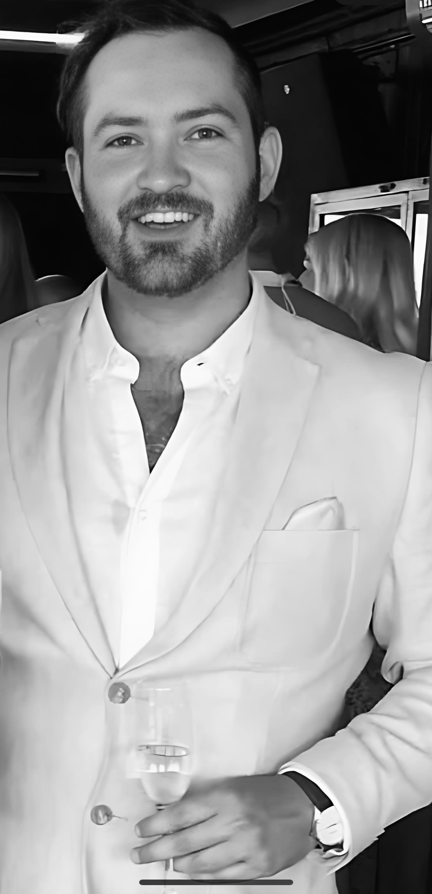

Marcus
Hultberg
Quest Designer · Story Writer · World Builder
Jag skapar världar med historia, karaktärer med djup och quests som spelare minns länge efter att spelet är slut.
Spelbar berättelse, inte färdigskriven
Jag tror att berättande och gameplay fungerar bäst när de stärker varandra, inte konkurrerar. Jag skriver inte manus som spelare ska följa. Jag skapar situationer som spelare vill lösa.
Mitt arbete kretsar kring levande NPC:er, små mänskliga konflikter och konsekvenser av spelarval. Jag blandar humor med allvar och bygger tydliga gameplay-krokar som leder in i berättelsen naturligt. Målet är att spelarna ska känna att världen reagerar på dem, och att varje karaktär de möter har ett liv bortom det de ser.
Läs mer om mig